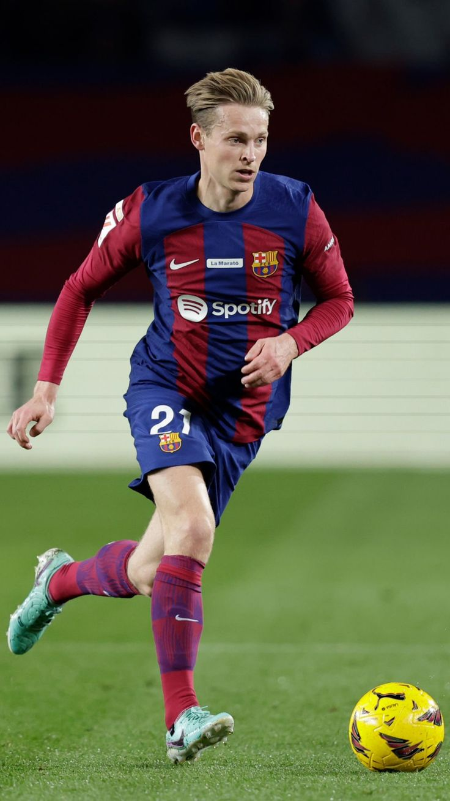

Gavi
Centrocampista

Datos personales
- Nombre completo: Pablo Martín Páez Gavira
- Fecha de nacimiento: 5 de agosto de 2004
- Lugar de nacimiento: Los Palacios y Villafranca, España
- Nacionalidad: Española
- Altura: 1,73 m
- Posición: Centrocampista
- Dorsal: 6
Trayectoria
- 2015-2020: Real Betis (cantera)
- 2020-2021: FC Barcelona Juvenil
- 2021-actualidad: FC Barcelona
Estadísticas con el primer equipo
- Partidos: 120+
- Goles: 10+
- Asistencias: 15+
Palmarés
- La Liga (2022-2023)
- Supercopa de España (2023)
- Golden Boy 2022
- Trofeo Kopa 2022
Biografía
Gavi llegó a La Masia procedente del Real Betis y debutó con el primer equipo del FC Barcelona en 2021 con tan solo 17 años. Su intensidad, garra y calidad técnica le convirtieron rápidamente en un ídolo para la afición culé.
Es internacional absoluto con la selección española y fue elegido Golden Boy en 2022, premio al mejor jugador joven del fútbol europeo.